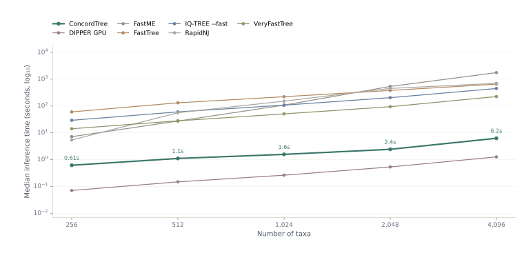

Technical report V1.0.2
Runtime
Recorded inference times, with current V1.0.2 results through 4,096 taxa. Process startup and nRF evaluation are excluded. Timing scope
Gene trees


Observed runtime ratios
Min–max · paired inputsComparator / ConcordTree time. Above 1× favors ConcordTree.
| Method / taxa | 256 | 512 | 1,024 | 2,048 | 4,096 |
|---|---|---|---|---|---|
| DIPPER GPU | 0.0042–0.23× | 0.0033–0.30× | 0.03–0.36× | 0.01–0.37× | 0.04–0.45× |
| FastTree | 4.75–286.0× | 9.23–264.5× | 24.3–430.9× | 29.3–259.2× | 14.9–344.1× |
| VeryFastTree | 1.91–61.0× | 2.02–58.1× | 5.23–90.3× | 6.17–70.5× | 4.78–104.3× |
| FastME | 0.94–50.5× | 2.58–74.8× | 8.85–274.9× | 37.4–3,322× | 47.5–1,281× |
| RapidNJ | 0.21–58.3× | 2.08–151.7× | 19.5–270.5× | 19.2–294.0× | 1.14–623.0× |
| IQ-TREE --fast | 2.59–297.7× | 7.50–191.2× | 12.4–277.4× | 11.8–157.7× | 9.82–225.9× |


Species trees

Observed runtime ratios
Min–max · paired inputsComparator / ConcordTree time. Above 1× favors ConcordTree.
| Method / taxa | 32 | 64 | 128 | 192 | 256 | 512 | 1,024 | 2,048 | 3,072 | 4,096 |
|---|---|---|---|---|---|---|---|---|---|---|
| DIPPER GPU | 0.007–0.35× | 0.05–0.70× | 0.06–0.48× | 0.08–0.45× | 0.10–0.38× | 0.14–0.35× | 0.22–0.36× | 0.13–0.27× | 0.14–0.29× | 0.16–0.31× |
| FastTree | 53.3–1,183× | 356.3–4,518× | 640.6–5,167× | 778.8–4,800× | 1,150–4,919× | — | — | — | — | — |
| CASTER-site | 2.80–67.4× | 25.2–885.7× | 64.5–1,718× | 123.7–2,915× | 185.4–2,583× | — | — | — | — | — |
| VeryFastTree | — | — | — | — | — | 170.6–684.4× | 201.8–582.2× | 111.5–323.7× | 119.5–343.2× | 136.2–391.0× |
| FastME | — | — | — | — | — | 252.2–970.5× | 793.5–1,836× | 801.3–2,403× | 1,571–3,482× | — |
| RapidNJ | — | — | — | — | — | 6.11–29.1× | 9.65–67.7× | 2.05–39.0× | 20.4–43.7× | 28.1–634.6× |


Timing scope & data
ConcordTree at 32–1,024 taxa uses the retained-engine report measurements. At 2,048–4,096 taxa, the 14 November full-pipeline runs use engine elapsed time in fresh CLI processes: decompression, parsing, initialization, refinement, support and tree export are included, as is task-internal first-use loading. Process startup and nRF evaluation are excluded. The dotted divider marks the change in measurement conditions; connecting lines guide the eye.
Gene timings are retained. DIPPER at 32–1,024 species taxa and on the gene panel uses the remeasured timing contract; DIPPER at 2,048–4,096 taxa and the other methods retain archived measurement conditions. Hardware, threads, concurrency and timing boundaries differ; these are observed runtime ratios, not controlled algorithmic speedups.
Each cell reports the exact observed minimum and maximum of individual ratios on identical successful input IDs. Missing, failed and timed-out runs are not assigned ratios. FastME at 4,096 taxa timed out after 12 hours.
Records · Large-input timing audit · DIPPER timing contract · DIPPER measurements · DIPPER topology check